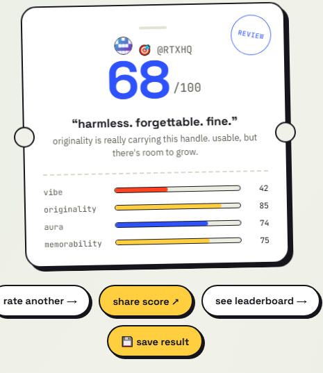

Rate My Username
A free tool that scores your @ out of 100 — and somehow turned into six.
A joke that didn't stay a joke
It started the way most of my projects do — a dumb-sounding question with a friend: "is your username actually good, or are you just used to it?" There's no real answer to that, which is exactly why it's fun. So instead of debating it, I built something that would just tell you, with fake confidence and zero mercy.
The bet was that people don't want a serious analytics tool for their handle — they want a verdict. Something shareable, a little unhinged, over in ten seconds.
Scoring with personality, not just a number
The obvious version of this tool is a single number and nothing else — boring, and not very shareable. Instead, every username gets scored across four categories — vibe, originality, aura, memorability — plus a one-line verdict written to match the score, not just describe it. A 68 gets called "harmless, forgettable, fine." A 91 gets "okayyy we see you." The copy is doing as much work as the number.
The harder call was tone: it needed to feel like a friend roasting you, not a tool insulting you. That line shows up everywhere in the product — including a dedicated roast mode for people who explicitly want it turned up.

a middling score, delivered gently

a great one, hyped up properly
It grew past "rate your username" fast
Once the core scorer worked, the obvious next questions were "but who wins?" and "what if I want to be mean about it?" — so I kept building on the same scoring engine instead of stopping at v1:
Rate My Username
The core tool — score your @ out of 100 across four categories, instantly, no sign-up.
Compare 2 Usernames
Put two handles head-to-head and see which one actually wins.
Get OG Bio
A certified bio generated to match your @'s whole personality.
Ultimate Username Championship
A bracket-style tournament — usernames battle it out for the crown.
GameCard
Turns your score into a shareable 9:16 gamer/creator poster.
Roast My Username
Same engine, dialled up — for people who want to get cooked on purpose.
Live, and still getting features
Rate My Username is live at ratemyusername.fun, with a global leaderboard people actually check back on. I built the whole thing solo, leaning on AI tools to move fast through implementation — but every scoring rule, every line of verdict copy, and every "wait, is this actually funny or just mean" call was mine to make.